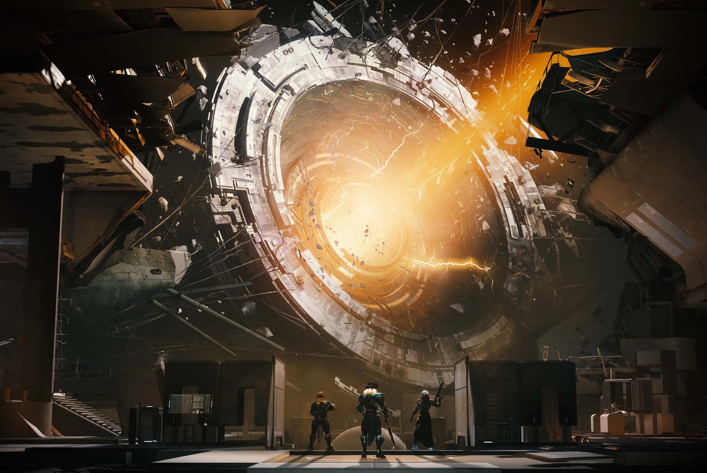
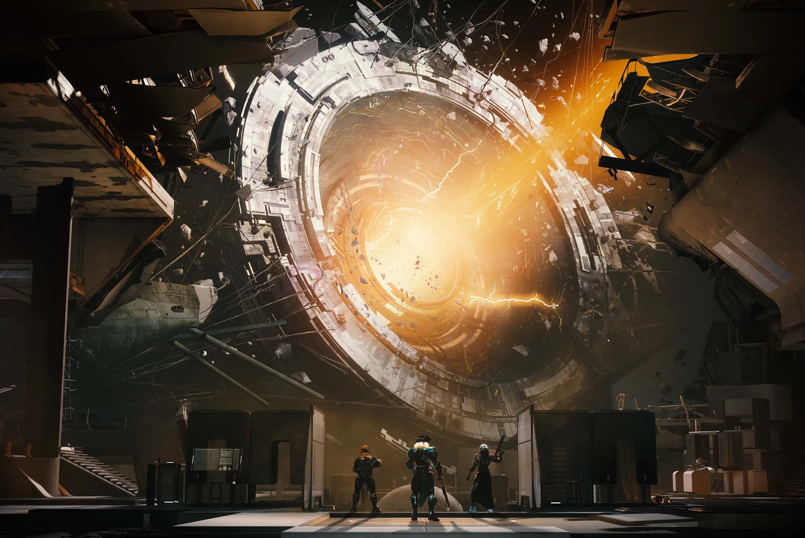

Destiny 2
For Destiny 2, I've built a ton of different activity content on different teams. The majority of my work has been with the Raid and Dungeons team, which builds long (60-90+ minute), replayable missions focused on challenging combat and complex cooperative gameplay.
(Some) Activities I have worked on:
In this dungeon, players board a damage space station and face off with the horrors inside.
For this activity, I was design owner for the 1st boss, a damaged machine which has several combat abilities, including the capability to break apart into multiple bodies and then recombine into its normal form (footage of this encounter is below). I also built about half of the traversal content.
During this project I ended up taking over the first encounter as well, based on a prototype done by another designer, and also built a very complex puzzle for the Destiny community to take on as they explored more of the dungeon (an explanation for which is linked below).
 

{kind=link}
In this dungeon, players ascend through the ruins of an ancient castle built into the side of a snowy mountain, battling the ghost of a slain dragon.
For this activity, I was design owner for the final boss, a physical manifestation of the dead dragon's corrupting influence, that worked its infection into everything around it. Beyond that, I also built about 1/3 of the traversal content.
Footage of the final boss is included below.
{kind=link}
{kind=link}
In this dungeon, players venture into an artificial forest and dive to the depths of the sea below to search the wreckage of a massive alien ship, and prevent the resurrection of a dead god.
For this activity, I was design owner for the opening encounter, in which players complete a ritual by following randomized trails that lead into the spooky forest, gathering materials from defeated combatants, and keeping track of alien symbols.
I also worked on a huge amount of traversal content, and several secret encounters with a boss that players can encounter on repeat clears.
{kind=link}
{kind=link}
{kind=link}